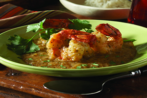
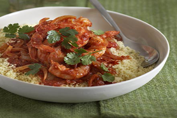
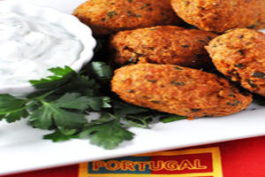
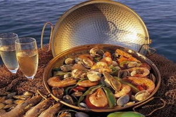
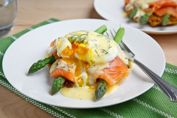

- Recipes
King Prawn & Coconut Stew
Brazilian-King Prawn & Coconut Stew
Ingredients Needed:
Procedure:
1. Place the onion, chilies, tomatoes, garlic, cilantro and lime juice in food processor with a generous pinch of sea salt. Puree then pour into a non-metallic bowl and add prawns. Leave to marinate for 10 minutes. 2. Heat a wok or heavy-based deep casserole dish. Remove prawns from marinade and keep to one side. 3. Add olive oil to the pan and then add marinade. Cook over high heat for 2 minutes before adding coconut cream. Bring to boil, then turn down to a simmer for 2 more minutes, when sauce should be well combined and slightly reduced. 4. Throw in prawns and cook for 2 minutes, or until just cooked through. Check seasoning before removing from heat. 5. To serve, pour dende oil over all and sprinkle with cilantro sprigs. Serve with bowls of steamed rice.
Piri-piri prawns and harissa couscous
Portuguese-Piri-piri prawns and harissa couscous
Ingredients Needed:
For the piri-piri prawns
Procedure:
1. For the piri-piri prawns, place all the ingredients except the prawns into a food processor and blend until smooth. 2. Place the prawns on a plate and rub over the piri-piri sauce, reserving a little to garnish. Leave to marinate in the fridge for an hour. 3. Heat a griddle pan until hot and cook the prawns for 4-5 minutes on each side, depending on their size, until the prawns have turned pink and are cooked through. 4. For the couscous, place the couscous into a bowl, pour over the boiling water and stir with a fork to combine. Add the harissa, pomegranate molasses, baharat and lemon juice and stir once more. Cover with cling film and set aside for 3-4 minutes, until all the liquid has been absorbed into the couscous. 5. Remove the cling film and fluff up with a fork. Add the red onion, fleshy pomegranate seeds and coriander and mix well. 6. To serve, place three prawns onto each plate with a pile of couscous. Drizzle over the reserved piri-piri sauce and a squeeze of lemon.
Codfish Balls
Portuguese-Codfish Balls
Ingredients Needed:
Procedure:
1. Bake the Salmon, allow to cook and flake. Concurrently, boil the potatoes until easily pierced with a knife. 2. In a large bowl, combine the salmon, potato, garlic, herbs, egg yolks, and salt and pepper. Refrigerate for a minimum of 1 hour. 3. Using a heaping tablespoon of the salmon mixture into your hands and shape into a ovalish croquette. Repeat until you have used all the mixture. 4. Pour enough oil into the large heavy pot to just cover the croquettes (eyeball it) and allow to heat to 300-325 degrees. I then cooked 6 croquettes at a time, gently moving them around about every minute. Allow them to cook until they are a medium-dark brown. 5. Using a spider or slotted metal spoon, remove them carefully onto a paper towel lined plate and season with salt. Repeat until all croquettes are cooked.
Cataplana of seafood
Portuguese-Cataplana of seafood
Ingredients Needed:
Procedure:
1. To make the Lisbon paste, place the peppers into a hot char-gril panl and char all over. 2. Place in a bowl and cover with cling film and set aside for 10 minutes. 3. Remove the cling film, cut the peppers into quarters and remove the skin with a knife. 4. Blend the peppers with garlic in a food processor to form a paste. 5. Add the olive oil with the motor still running. 6. Season, to taste, with salt. 7. To make the base stock, heat the oil, onion, garlic and bay leaf over medium heat. 8. Add the Lisbon paste and sauté. 9. Add the anchovies and sauté for 1 minute. 10. Add the tomatoes and cook for a further 3 minutes. 11. Add wine, star anise and stock and cook a further 20 minutes. 12. To make the cataplana of seafood, heat a cataplana (a saucepan with tight fitting lid is a good substitute). 13. Fry the olive oil, onions, garlic, Lisbon paste and potatoes. Add the fish, mussels, lobster and a ladle of base stock. Close it and partly cook for 2 minutes. 14. Add the rest of the seafood, cover with the remaining stock and parsley, re-cover with the lid and cook for a further 4 minutes. 15. To serve, open the cataplana at the table to capture the aromas.
Smoked Salmon Asparagus
Netherland-Smoked Salmon Asparagus Quinoa Cake Eggs Benedict
Ingredients Needed:
Procedure:
1. Place a large pot of water on one burner over medium heat for the poached eggs. 2. On a separate burner, bring some water in a double boiler to a boil, reduce the heat and let water stop boiling. 3. Place the egg yolks in the top of the double boiler and whisk until they begin to thicken. 4. Add 1 tablespoon of the hot water, whisk until the sauce begins to thicken again. Repeat 3 more times. 5. Whisk in the lemon juice. 6. Remove from heat and slowly whisk in the melted butter. 7. Season with the dill, salt and pepper and set aside. 8. Crack an egg into a bowl, swirl the water in the first pot and pour the egg from the bowl into the water and repeat for another egg. 9. Let the eggs cook until the whites are set but the yolks are not, about 2-3 minutes and fish them out. 10. Repeat for the remaining 2 eggs. 11. Place the asparagus quinoa cakes on plate, top with asparagus, smoked salmon, poached egg, hollandaise and garnish with dill.